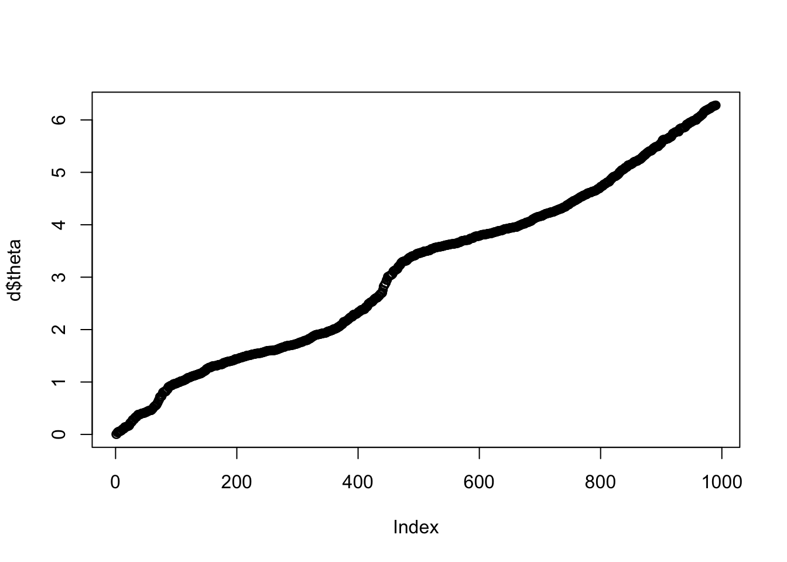
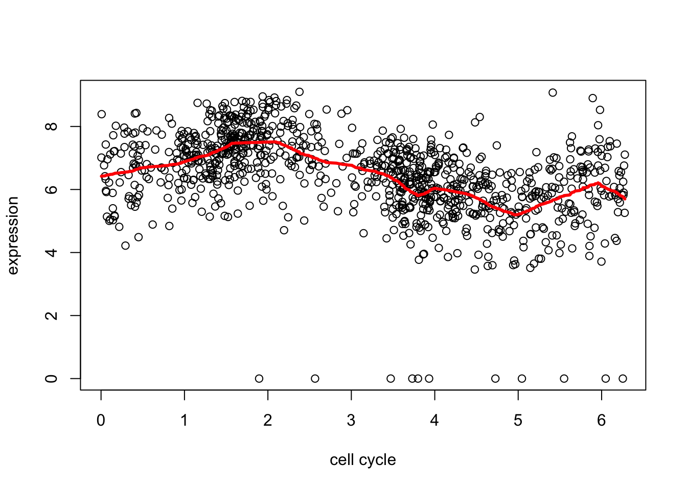
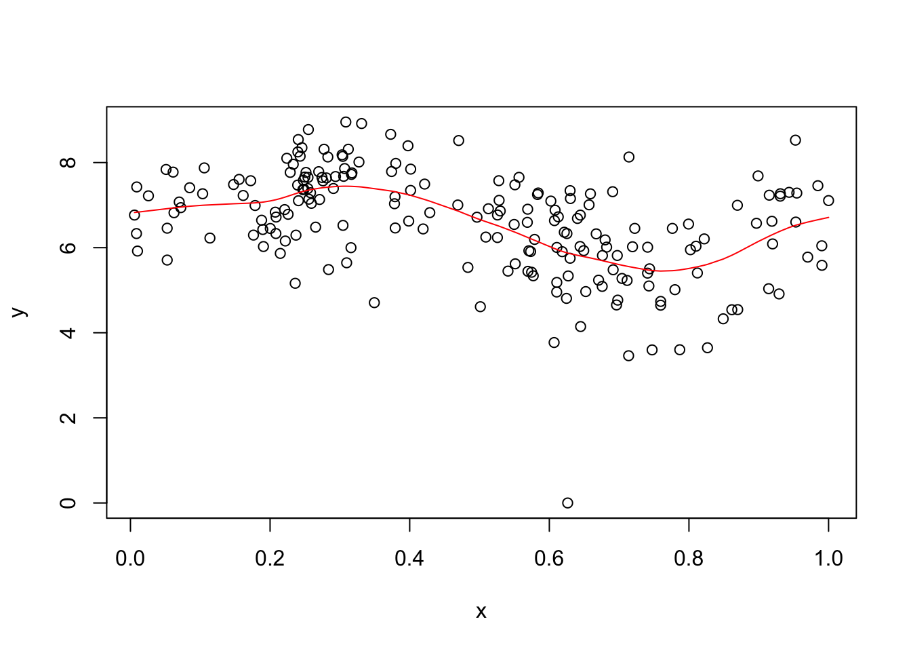

Last updated: 2018-05-21
workflowr checks: (Click a bullet for more information) ✔ R Markdown file: up-to-date
Great! Since the R Markdown file has been committed to the Git repository, you know the exact version of the code that produced these results.
✔ Environment: empty
Great job! The global environment was empty. Objects defined in the global environment can affect the analysis in your R Markdown file in unknown ways. For reproduciblity it’s best to always run the code in an empty environment.
✔ Seed:
set.seed(20180411)
The command set.seed(20180411) was run prior to running the code in the R Markdown file. Setting a seed ensures that any results that rely on randomness, e.g. subsampling or permutations, are reproducible.
✔ Session information: recorded
Great job! Recording the operating system, R version, and package versions is critical for reproducibility.
✔ Repository version: 8304e29
wflow_publish or wflow_git_commit). workflowr only checks the R Markdown file, but you know if there are other scripts or data files that it depends on. Below is the status of the Git repository when the results were generated:
Ignored files:
Ignored: .DS_Store
Ignored: .Rhistory
Ignored: .Rproj.user/
Ignored: .sos/
Ignored: exams/
Ignored: temp/
Untracked files:
Untracked: analysis/hmm.Rmd
Untracked: analysis/neanderthal.Rmd
Untracked: analysis/pca_cell_cycle.Rmd
Untracked: analysis/ridge_mle.Rmd
Untracked: data/reduced.chr12.90-100.data.txt
Untracked: data/reduced.chr12.90-100.snp.txt
Untracked: docs/figure/hmm.Rmd/
Untracked: docs/figure/pca_cell_cycle.Rmd/
Untracked: homework/fdr.aux
Untracked: homework/fdr.log
Untracked: tempETA_1_parBayesC.dat
Untracked: temp_ETA_1_parBayesC.dat
Untracked: temp_mu.dat
Untracked: temp_varE.dat
Untracked: tempmu.dat
Untracked: tempvarE.dat
Unstaged changes:
Modified: analysis/cell_cycle.Rmd
Modified: analysis/density_est_cell_cycle.Rmd
Modified: analysis/eb_vs_soft.Rmd
Modified: analysis/eight_schools.Rmd
Modified: analysis/glmnet_intro.Rmd
Here I’m going to try fitting a GP to the cell cycle data:
d = readRDS("../data/cyclegenes.rds")
dim(d)[1] 990 11Recall each row is a single cell. The first column (“theta”) is an estimate of where that cell is in the cell cycle, from 0 to 2pi. (Note that we don’t know what stage of the cell cycle each point in the interval corresponds to - so there is no guarantee that 0 is the “start” of the cell cycle. Also, because of the way these data were created we don’t know which direction the cell cycle is going - it could be forward or backward.) Then there are 10 columns corresponding to 10 different genes.
I’m going to order the rows by cell cycle (theta, first column) as this will make things much easier later.
# order the data
o = order(d[,1])
d = d[o,]
plot(d$theta)
| Version | Author | Date |
|---|---|---|
| 1ad7db7 | stephens999 | 2018-05-21 |
Remember before we tried trend filtering on these data…
library(genlasso)Loading required package: MASSLoading required package: MatrixLoading required package: igraph
Attaching package: 'igraph'The following objects are masked from 'package:stats':
decompose, spectrumThe following object is masked from 'package:base':
uniond2.tf = trendfilter(d[,2],ord = 1)Warning: 'rBind' is deprecated.
Since R version 3.2.0, base's rbind() should work fine with S4 objectsd2.tf.cv = cv.trendfilter(d2.tf) # performs 5-fold CVFold 1 ... Fold 2 ... Fold 3 ... Fold 4 ... Fold 5 ... plot(d[,1],d[,2],xlab="cell cycle",ylab="expression")
lines(d[,1],predict(d2.tf, d2.tf.cv$lambda.min)$fit,col=2,lwd=3)
| Version | Author | Date |
|---|---|---|
| 1ad7db7 | stephens999 | 2018-05-21 |
I found GP_fit took a while, so I subsampled to 200 to try to reduce time. Also it seemed to want \(x\) in the range \([0,1]\) so I normalized the \(x\) values for it.
subset = sort(sample(1:nrow(d),200))
x = d[subset,1]
y = d[subset,2]
x = x/max(x) # normalize to be in 0,1
y.gpfit = GPfit::GP_fit(x,y)
plot(x,y)
lines(x,predict(y.gpfit)$Y_hat,col=2)
| Version | Author | Date |
|---|---|---|
| 1ad7db7 | stephens999 | 2018-05-21 |
sessionInfo()R version 3.3.2 (2016-10-31)
Platform: x86_64-apple-darwin13.4.0 (64-bit)
Running under: OS X El Capitan 10.11.6
locale:
[1] en_US.UTF-8/en_US.UTF-8/en_US.UTF-8/C/en_US.UTF-8/en_US.UTF-8
attached base packages:
[1] stats graphics grDevices utils datasets methods base
other attached packages:
[1] genlasso_1.3 igraph_1.2.1 Matrix_1.2-14 MASS_7.3-49
loaded via a namespace (and not attached):
[1] Rcpp_0.12.16 knitr_1.20 whisker_0.3-2
[4] magrittr_1.5 workflowr_1.0.1 GPfit_1.0-0
[7] lattice_0.20-35 stringr_1.3.0 tools_3.3.2
[10] grid_3.3.2 R.oo_1.22.0 git2r_0.21.0
[13] htmltools_0.3.6 yaml_2.1.18 rprojroot_1.3-2
[16] digest_0.6.15 lhs_0.16 R.utils_2.6.0
[19] evaluate_0.10.1 rmarkdown_1.9 stringi_1.1.7
[22] backports_1.1.2 R.methodsS3_1.7.1 pkgconfig_2.0.1 This reproducible R Markdown analysis was created with workflowr 1.0.1